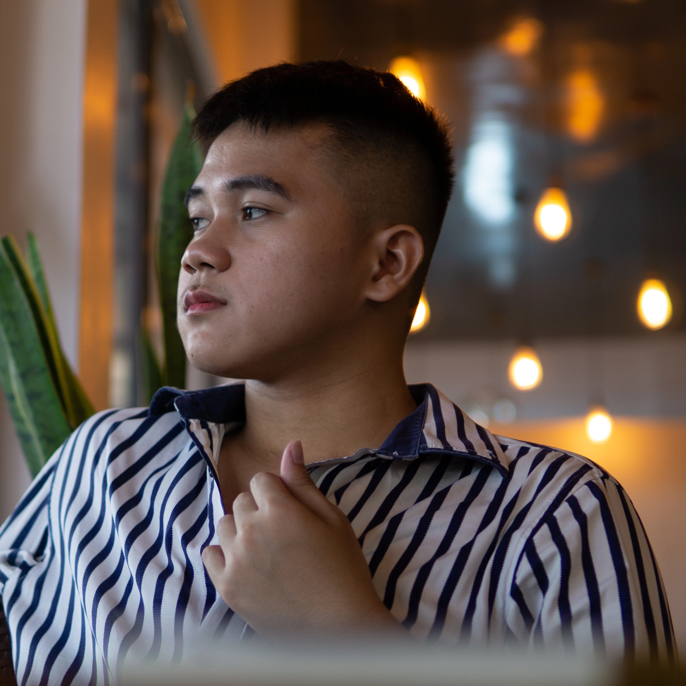

Christian John Ylanan
I'm a fresh Computer Engineering graduate from La Salle University - Ozamiz with a passion for web and UI/UX design. My interest in design started in middle school with graphic design, and in college, focused on creating websites and user interfaces.
I believe a good website should look aesthetically pleasing and be user-friendly.
Visual art has always been important to me. Since primary school, I've won several local poster-making competitions, which helped shape my approach to design. I aim to make websites that are both beautiful and easy to use.
